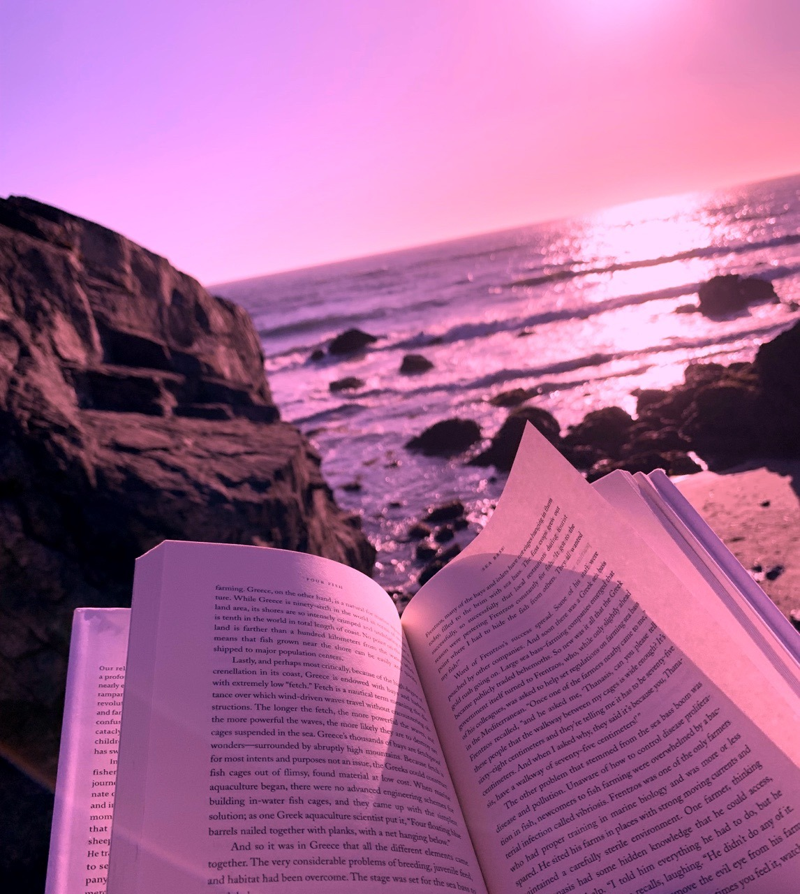

Posljednjih desetljeća znanstvena istraživanja potvrđuju ono što brojne istočnjačke tehnike opuštanja znaju već stoljećima: redovita relaksacija važna je karika u uspostavljanju mentalnog i tjelesnog zdravlja.
To može biti vaša prva linija obrane od stresa. Vježbe za disanje su predivne za opuštanje, jer se mogu koristiti bilo kada i na bilo kojem mjestu, rade brzo i lako se svladavaju.
Mnogi ljudi pokušavaju razmišljati i otkriti da je to prekrasan alat za opuštanje. Mnogi drugi razmislite o pokušaju, ili pokušajte nekoliko puta i odlučite da nije za njih. Ako ste u drugoj grupi, možda biste trebali razmisliti o meditaciji drugom izgledu - izvrsno je za opuštanje, kao i za razvoj pozitivnog stava i, ako se prakticira dugoročno, veću otpornost prema stresu.
Reprodukcija glazbe izvrstan je način za ublažavanje stresa i promicanje opuštanja za svoju obitelj i prijatelje, kao i za sebe. (U redu, možda tvoji suradnici neće uživati u slušanju vaših pjesama koliko i vi, pa je možda to najbolje moguće spasiti kod kuće i u automobilu.) Budući da glazba donosi stvarne prednosti u smislu wellnessa (glazbena terapija je raste polje), može se praktično učinkovito koristiti i za opuštanje.
Čini se da je vježba suprotna opuštanju, ali dobar trening zapravo može učiniti da se osjećate opušteno nakon toga za nekoliko razloga. Prvo, izrada može biti dobar način za oslobađanje stresa i isušivanje pare. Drugo, endorfini oslobođeni tijekom dobrog treninga mogu pomoći opuštanju vrlo lijepo. Osim toga, tjelovježba vas može dovesti u stanje tijeka gdje je teško ostati pod stresom - vaše tijelo mora krenuti prema opuštanju dok se stresni odgovor počinje preokrenuti.